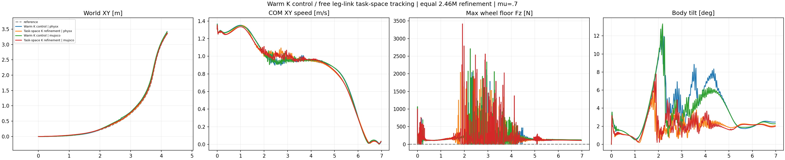

The new task-space actor does not pass the complete nominal task in both engines. The stable-contact goal remains unmet; no new friction sweep is launched.
| Cell | Core XY RMSE (m) | Speed/reference | Beta RMSE (deg) | Any-wheel support (%) | Max gap (ms) | HF/original | Failed retained checks |
|---|---|---|---|---|---|---|---|
| Warm K control | physx | 0.0810 | 0.974 | 3.37 | 90.96 | 75.0 | 0.738 | any_wheel_every_physical_sample, longest_no_support_gap, core_HF_reduction |
| Task-space K refinement | physx | 0.0658 | 0.993 | 1.78 | 85.52 | 52.5 | 0.518 | any_wheel_every_physical_sample, longest_no_support_gap |
| Warm K control | mujoco | 0.0847 | 0.973 | 2.76 | 88.66 | 50.0 | 0.795 | any_wheel_every_physical_sample, longest_no_support_gap, core_HF_reduction |
| Task-space K refinement | mujoco | 0.0803 | 0.990 | 1.93 | 85.88 | 52.5 | 0.660 | any_wheel_every_physical_sample, longest_no_support_gap |
Core 1.44–4.00 s; support 0.02–6.96 s. At least one wheel must exceed 5 N upward measured ground-normal force at every actual 2.5 ms sample. Single-wheel lift is allowed. The nine unchanged checks require core/whole XY RMSE ≤0.15 m and peak ≤0.30 m, core speed ratio 0.95–1.10, intended nonzero beta RMSE ≤10 degrees, core angular-XY 10–100 Hz RMS ≤0.7 of the original same-engine PPO, support 100% and maximum gap zero. No absolute-height or geometric-flight failure gate is introduced. Whole-body integrity and the within-turn speed profile also matter. Lower chatter after collapse or loading the wheels after a fall does not establish success.
control_physx. The four inspected frames remain upright. Both wheel forces are zero at 3.00 s despite close XY/speed tracking. At 4.00 s support returns. Original control fails continuous support and the HF threshold.
taskspace_physx. Upright with visibly more crouched legs and smaller body tilt in the inspected frames. At 2.24 s tilt is 1.2 degrees, XY error .083 m and speed 1.06 m/s. At 3.00 s both forces are zero and none of the preceding eight native samples is supported; the same occurs at 4.00 s despite XY error .021 m and speed .95 m/s. At 6.96 s it stands loaded at the planned stop. Better tracking/low body tilt do not remove intermittent wheel loading.
control_mujoco. Upright in the inspected frames; both forces are zero at 2.24 s, and support is intermittent in the full trace. Tracking is close but continuous support and HF gates fail.
taskspace_mujoco. Upright with low tilt and close XY path in the inspected frames. At 2.24 s the right wheel carries 262 N with all eight preceding samples supported. At 3.00 s the left wheel reads 153 N but only one of the preceding eight samples is supported. At 4.00 s both wheels carry load; at 6.96 s it stands at the planned stop. The full native trace still contains 52.5 ms support gaps.

The locked 349-frame car-derived reference keeps all six leg joint positions constant and all six reference leg velocities zero. The old reward nevertheless tracks nine body positions/linear velocities and seven non-wheel orientations/angular velocities. These are artificial intermediate-leg imitation targets. Their presence is verified; their causal role in contact chatter is a hypothesis tested here, not a claim that the reference is physically infeasible.
The new actor retains base and both wheel-center XY position/linear-velocity objectives, restricts body angular-velocity tracking to the base, and replaces the non-wheel body-orientation objective with both wheels' world-referenced rolling-plane heading objective. Heading uses the authored local-Y axle, is invariant to wheel axial rotation and compares the plane modulo pi. It is not a zero-slip objective. Root global orientation, speed, yaw-rate and directed nonzero beta targets remain active. The heading scale is the original orientation scale 0.4 rad. Singular horizontal axle projections receive zero heading reward; nonfinite states remain nonfinite and are rejected.
Exactly four tracking definitions change; all 15 reward weights and the K physical-substep contact formula stay unchanged. The other eleven reward terms, original held position commands, PD 500/10, torque/speed limits, rigid cylinders, observations, clocks and original friction/encoder/COM/push DR remain unchanged. This is a task-space reward ablation, not a new tire-law experiment, stronger contact weight, motor-gain change or action filter. Validation records native physics without applying a training reward owner.
The control is the completed warm K arm, not the original shorter-budget K policy. Both arms start from original K checkpoint 8cb011e4c5e2a33a685bc58280df410141ab99aa245892042762b8956595fe5a with bit-identical actor/critic/normalizers, fresh Adam moments, fixed learning rate 0.0001 and clip 0.1. Both add 512×24×200 = 2,457,600 transitions; each resulting actor has 14,745,600 cumulative transitions. Runner configuration, initial state, reference, weights, contact settings and retained DR/acceptance are independently compared. Each variant uses one actor in both engines at fixed mu 0.7 without validation DR/noise. One-seed closed-loop transfer includes changing observations and actions; it does not isolate solver-only error.
The first setup revision incorrectly required a specific parameter-list order for the original leg names. It failed during configuration before environment construction or training; its logs, source and launch record are retained separately. The repaired guard validates the original unique name set, matching upstream membership selection. Reward targets, PPO settings and budgets were unchanged. The revised native smoke, strict CPU checkpoint/export verification and complete formal refinement passed. Fourteen CPU tests pass, including wheel-spin invariance and nonfinite-state handling. No failed setup is relabeled as training.
All 350 video frames decode, all four native metrics are independently recomputed and the common fixed relative camera is verified. Saved stills at 2.24, 3.00, 4.00 and 6.96 s were inspected. Full manual video playback is not claimed. Replays use original native poses with opaque meshes, translation-only following at one fixed common distance, fixed world angles and common-scale world XY. No pose, height or contact correction is applied. All owned jobs are terminal. Neural weights, physical assets, credentials and native libraries are excluded from the published evidence.
The full native body-contact diagnostic separates the saved t=0 sample from the subsequent 2,792 physical samples. PhysX reports 58.41 N non-wheel ground force only at t=0; all subsequent samples report zero. MuJoCo reports zero throughout. The raw initial reading is retained and is not presented as a contact event during the controlled turn.
Metrics and exact policy identities · Source/reference target audit · Collected file hashes · Numerical/replay verification · Still review · CPU tests · Preserved setup failure.
Protocol · Four tracking definitions · Trainer · Strict verifier · Native evaluator · Analyzer · Renderer. Exact existing dependency/asset locations and invocation arguments remain in the collected launch records.